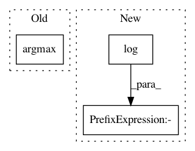

e3f85d146653691809ce1a38388c3f199dbe6e7d,libact/query_strategies/uncertainty_sampling.py,UncertaintySampling,make_query,#UncertaintySampling#Any#,13
Before Change
elif self.method == "le": // default : label entropy (most commonly used)
// XXX divide by zero?
ask_id = np.argmax(-np.sum(self.model.predict_real(X_pool)
* np.log(self.model.predict_real(X_pool)), 1))
else:
raise ValueError(
"Invalid method "%s" (available choices: ("lc", "sm", "le")"
After Change
// np.argmax(...) -> O(N)
// therefore, total time complexity = O(NK)
prob = self.model.predict_real(X_pool)
ask_id = np.argmax(-np.sum(prob * np.log(prob), 1))
// ask_id = np.argmax(-np.sum(self.model.predict_real(X_pool)
// * np.log(self.model.predict_real(X_pool)), 1))
In pattern: SUPERPATTERN
Frequency: 3
Non-data size: 3
Instances
Project Name: ntucllab/libact
Commit Name: e3f85d146653691809ce1a38388c3f199dbe6e7d
Time: 2015-03-03
Author: iamyuanchung@gmail.com
File Name: libact/query_strategies/uncertainty_sampling.py
Class Name: UncertaintySampling
Method Name: make_query
Project Name: reinforceio/tensorforce
Commit Name: ccbe291ec9859698a57147b1033d503a7739dfa9
Time: 2017-08-03
Author: aok25@cl.cam.ac.uk
File Name: tensorforce/core/distributions/categorical.py
Class Name: Categorical
Method Name: sample
Project Name: adalca/neuron
Commit Name: a6a499ba2f5559a511914e24b34a93c8095ecc40
Time: 2017-03-20
Author: adalca@mit.edu
File Name: src/pytools/metrics.py
Class Name: Dice
Method Name: loss